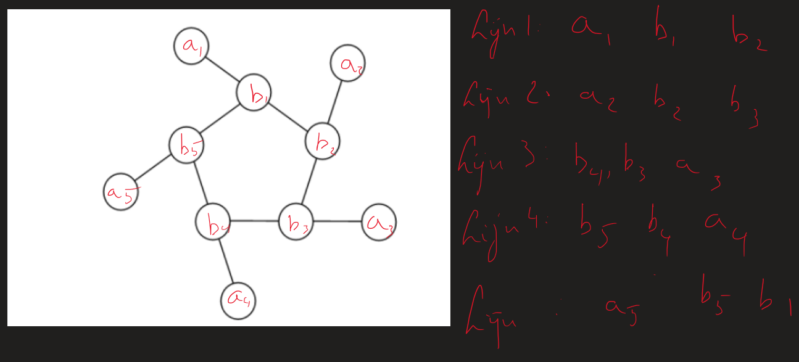

Project Euler
Project Euler probleem 68
Bekijk het originele probleem op Project Euler
Probleemstelling kort
In dit probleem zoek je de grootste 16-cijferige string voor een magic 5-gon ring met de getallen 1 tot en met 10.
Elke lijn van drie nodes moet dezelfde som hebben en de notatie start bij de lijn met de kleinste buitenste node.
Aanpak
Hoe ik deze probleem heb aangepakt is als volgt:
Ik heb eerst bepaald hoe dat de 5 lijnen bepaald worden

In de screenshot zie je dat ik de binnenste nodes 'b' noem.
En de buitenste noem ik 'a'
Dan kan je bepalen hoe dat elke lijn wordt bepaald.
Eens je dat weet kan je eigenlijk elke mogelijke combinatie genereren.
De code is als volgt:
Oplossing: 6531031914842725 Uitvoeringstijd: 1.052520 seconden